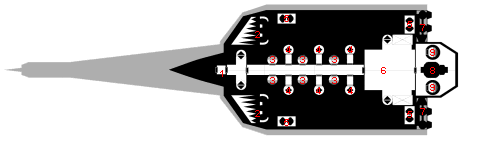

The scale used on these plans is 1 meter per square
Each deck is 3 meters in height with 2.5 meter from floor to ceiling
The decks are number from the top deck, Level 1, to the bottom deck, Level 4.
1: Missile Magazine
2: Meson Screens
3: Nuclear Dampener
4: Dorsal Laser Turrets Access
5: Dorsal Laser Turrets MFD Workstations
6: Missile MFD Workstations
7: Machine Shop
8: Electronics Shop
9: HEPlaR Drives
10: Power Plant
11: Sandcaster Turrets
12: Airlocks (exit to topside of the boat)
1: Sandcaster Turrets
2: Ship's Messhall
3: Crew Lounges
4: Quadruple Occupancy Crew Staterooms. With normal crew level
8 of the Crew Staterooms will have only 2 crew member assigned
to them.
5: Single Occupancy Senior Officers Staterooms for the 6 senior
officers
6: Double Occupancy Officers Staterooms for 4 of the 5 junior
officers. It has become tradition for the 5th junior officer
serving onboard Regulators to be quartered in the bunkroom. The
selection of which junior office is quartered in the bunkroom
varies from boat to boat but is usually determined by a game of
skill such as card or a type of lottery.
7: Bunkroom has 12 bunks with typically 6 assigned to ships troops,
1 assigned to the ships Janitor and 1 assigned to a junior officer.
Generally the last four remain unassigned
8: The Computer Room
9: The Bridge
10: Electronics Lockers
11: Life Support
12: Ship Locker
13: Airlocks
14: HEPlaR Drives
15: Power Plant and Main Engineering
1: Main Gun (either N-PAW, Meson Gun, or additional fuel)
2: Quadruple Occupancy Crew Quarters
3: Sandcaster Turrets
4: The Surgery
5: Intensive Care Unit
6: Low Berths
7: HEPlaR Drives
8: Power Plant
Level 4:

1: Main Airlock
2: Fuel Scoops and Purifiers
3: Ventricle Laser Turrets MFD Workstations
4: Ventricle Laser Turrets Access
5: Contra Grav Units
6: Cargo Bay
7: HEPlaR Drives
8: Power Plant
9: Sancaster Turrets
Return to the Regulator
By Chris Cox
Copyright© 1998 by Lawrence C. Cox
Traveller is a registered trademark of FarFuture Enterprises.
All rights reserved.
{kind=link}
{kind=link}
{kind=link}
{kind=link}